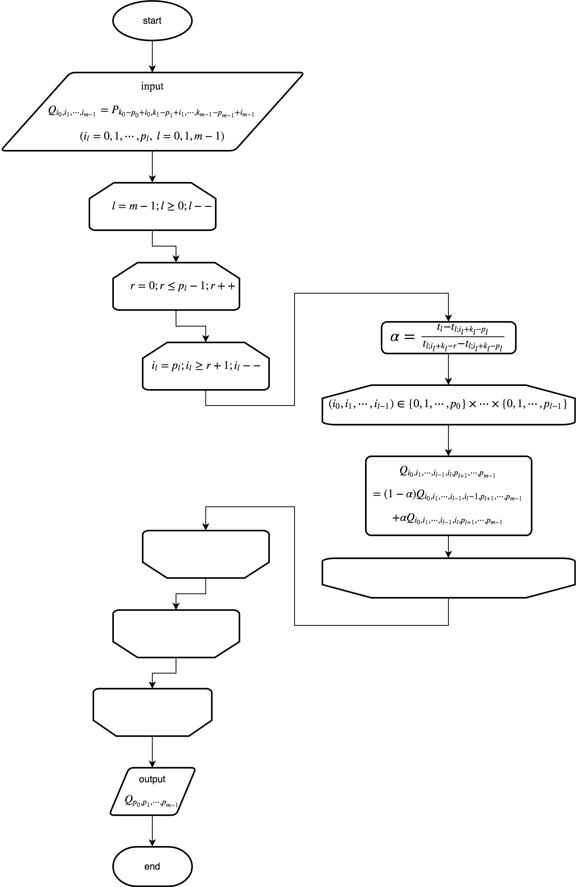

\(
\newcommand{\bm}[1]{\boldsymbol{#1}}
\newcommand{\d}{{\rm d}}
\newcommand{\div}{\nabla\cdot}
\newcommand{\grad}{\nabla}
\newcommand{\e}[1]{\bm{e}_{#1}}
\newcommand{\pard}[3]{\frac{\partial^{#2} #3}{\partial #1^{#2}}}
\newcommand{\T}{^{\rm T}}
\newcommand{\l}{<}
\newcommand{\g}{>}
\)
前回は1変数のB-Spline（NURBS）に対するde Boorのアルゴリズムについて説明した。
今回はこれを多変数に拡張する。とは言っても、前回ほどあれこれ考える必要はない。
まずは2変数のB-Splineから入る。
\begin{align}
\bm{S}(u,v)
&=
\sum_{i=0}^{m-1} \sum_{j=0}^{n-1}
\bm{P}_{i,j} M_{i,p}(u) N_{j,q}(v)
\end{align}
であり、ノットベクトルはオープンノットベクトルを仮定し、
\begin{align}
U
&=
\left\{
u_0, u_1, \cdots, u_{m+p}
\right\} \\
%
%
V
&=
\left\{
v_0, v_1, \cdots, v_{n+q}
\right\}
\end{align}
とおく。さて、確かに多変数関数だが、次の様に変形すれば1変数のときのを応用できるのが
分かるだろうか。
\begin{align}
\bm{S}(u,v)
&=
\sum_{i=0}^{m-1}
M_{i,p}(u)
\left(
\sum_{j=0}^{n-1} \bm{P}_{i,j} N_{j,q}(v)
\right) \\
%
%
&=
\sum_{i=0}^{m-1}
M_{i,p}(u)
\tilde{\bm{P}_i}
\end{align}
つまりは順に処理していくだけ、ということだ。
具体的に見ていく。\(u_k \leq u \l u_{k+1}\)、\(v_l \leq v \l v_{l+1}\)とする。このとき、
\begin{align}
\bm{S}(u,v)
&=
\sum_{i=k-p}^k
M_{i,p}(u)
\left(
\sum_{j=l-q}^l
\bm{P}_{i,j} N_{j,q}(v)
\right)
\end{align}
である。（以降"\(=\)"は等号ではなく、代入演算子を意味する）
\begin{align}
\bm{Q}_{i,j}
&=
\bm{P}_{k-p+i,l-q+j} \qquad (i=0,1,\cdots,p,\quad j=0,1,\cdots,q)
\end{align}
と初期化し、\(s=0,1,\cdots,q-1\)（インクリメント）、\(j=q,\cdots,s+2,s+1\)
（デクリメント）と反復し、
\begin{align}
\alpha
&=
\frac{t -t_{j+l-q}}{t_{j+l-s} -t_{j+l-q}} \\
\end{align}
を計算する。さらにその内側で\(i=0,1,\cdots,p\)と反復し、
\begin{align}
\bm{Q}_{i,j}
&=
(1-\alpha)\bm{Q}_{i,j-1}
+
\alpha \bm{Q}_{i,j}
\end{align}
と計算し、この反復の結果\(\bm{Q}_{i,q}(i=0,1,\cdots,p-1)\)に得られた値が
\(\tilde{\bm{P}}_i\)に相当する。ここで、1変数のときにはなかった一番内側の
ループの\(i=0,1,\cdots,p\)について触れると、同じ\(\alpha\)の値を使うため
同時に計算させている。（実際、\(\alpha\)に\(i\)は含まれない。）
後は1変数の時と殆ど同じだ。\(r=0,1,\cdots,p-1\)
（インクリメント）、\(i=p,\cdots,r+2,r+1\)（デクリメント）と反復し、
\begin{align}
\alpha
&=
\frac{t -t_{i+k-p}}{t_{i+k-r} -t_{i+k-p}} \\
%
%
\bm{Q}_{i,q}
&=
(1-\alpha)\bm{Q}_{i-1,q}
+
\alpha \bm{Q}_{i,q}
\end{align}
と計算した結果、\(\bm{Q}_{p,q}\)に欲しい結果\(\bm{S}(u,v)\)が得られる。
さて、変数の数を今度は一般化して考えてみる。\(t_0,t_1,\cdots,t_{m-1}\)を変数
とすると（ノットベクトルの要素ではないことに注意）
\begin{align}
\bm{F}(t_0,t_1,\cdots,t_{m-1})
&=
\sum_{i_0=0}^{n_0 -1}
\sum_{i_1=0}^{n_1 -1}
\cdots
\sum_{i_{m-1}=0}^{n_{m-1} -1}
\bm{P}_{i_0,i_1,\cdots,i_{m-1}}
N_{0;i_0,p_0}(t_0)
N_{1;i_1,p_1}(t_1)
\cdots
N_{m-1;i_{m-1},p_{m-1}}(t_{m-1})
\end{align}
\(N_{l;i_l,p_l}\)は\(t_l\)の関数であり、ノットベクトル\(T_l\)は
\begin{align}
T_l
=
\left\{
t_{l;0},t_{l;1},\cdots,t_{l;n_l+p_l}
\right\}
\end{align}
である。\(t_{l;k_l} \leq t_l \l t_{l;k_l +1}\)とすると、
\begin{align}
&\bm{F}(t_0,t_1,\cdots,t_{m-1}) \\
=&
\sum_{i_0=k_0 -p_0}^{k_0}
\sum_{i_1=k_1 -p_1}^{k_1}
\cdots
\sum_{i_{m-1}=k_{m-1} -p_{m-1}}^{k_{m-1}}
\bm{P}_{i_0,i_1,\cdots,i_{m-1}}
N_{0;i_0,p_0}(t_0)
N_{1;i_1,p_1}(t_1)
\cdots
N_{m-1;i_{m-1},p_{m-1}}(t_{m-1}) \\
%
%
&=
\sum_{i_0=k_0 -p_0}^{k_0}
N_{0;i_0,p_0}(t_0)
\left(
\sum_{i_1=k_1 -p_1}^{k_1}
N_{1;i_1,p_1}(t_1)
\left(
\cdots
\left(
\sum_{i_{m-1}=k_{m-1} -p_{m-1}}^{k_{m-1}}
\bm{P}_{i_0,i_1,\cdots,i_{m-1}}
N_{m-1;i_{m-1},p_{m-1}}(t_{m-1})
\right)
\right)
\right)
\end{align}
上で見た2変数のときのを応用して考えると、次の図のように書ける。

という運びになる。この図の中で
\begin{align}
(i_0,i_1,\cdots,i_{l-1}) \in \{0,1,\cdots,p_0\}\times\cdots\times\{0,1,\cdots,p_{l-1}\}
\end{align}
という式があるが、これは右側の直積集合の全要素に対してループを行うことを意味している。
さて、このアルゴリズムは変数の数を動的に変えるのならば、そのまま実装するのは難しい。例えば、
一番内側のループは、実装する時は更にfor文を入れ子にすることになるが、その階層の数が
コーディング時には決まっていないため実装が難しい。また、配列\(Q\)のインデックスの数が決まらない
ことになるため、そもそもそのまま実装するのは無理だ。
そこで次のように工夫する。\((i_0,i_1,\cdots,i_{m-1})\)という配列の\(m\)個のインデックスを
次のように一つの数に対応させる。
\begin{align}
(0,0,\cdots,0,0) &\longleftrightarrow 0 \\
(0,0,\cdots,0,1) &\longleftrightarrow 1 \\
(0,0,\cdots,0,p_{m-1}) &\longleftrightarrow p_{m-1} \\
(0,0,\cdots,1,0) &\longleftrightarrow p_{m-1}+1 \\
(0,0,\cdots,p_{m-2},0) &\longleftrightarrow p_{m-2}(p_{m-1}+1) \\
(0,0,\cdots,p_{m-2},p_{m-1}) &\longleftrightarrow (p_{m-2}+1)(p_{m-1}+1)-1 \\
(1,0,\cdots,0,0) &\longleftrightarrow (p_{1}+1)\cdots(p_{m-1}+1) \\
(i_0,i_1,\cdots,i_{m-2},i_{m-1}) &\longleftrightarrow
\sum_{k=0}^{m-1}i_k \prod_{l=k+1}^{m-1}(p_l +1)
= \sum_{k=0}^{m-1} i_k \Pi_{k+1}
\end{align}
ただし、\(\Pi_{m}=1\)とする。このようにすることで動的に変わる変数の数\(m\)個のインデックスを
使っていたところを1つのインデックスに置き換えることができる。また、
\begin{align}
(i_0,i_1,\cdots,i_{l-1}) \in \{0,1,\cdots,p_0\}\times\cdots\times\{0,1,\cdots,p_{l-1}\}
\end{align}
のところのループに関しては、\((i_0,i_1,\cdots,i_{l-1})\)を上から\(p_0+1\)進数、
\(p_1+1\)進数、...、\(p_{l-1}+1\)進数の数と見なしてループを回せばいい。例えば、
\(p_0=p_1=\cdots =p_{l-1}=9\)だった場合、
\begin{align}
(i_0,i_1,\cdots,i_{l-1}) \in \{0,1,\cdots,9\}\times\cdots\times\{0,1,\cdots,9\}
\end{align}
となり、\(00\cdots 00\)、\(00\cdots 01\)、...、\(00\cdots 09\)、\(00\cdots 10\)と
繰り上がりさせれば、直積集合の全要素に対してループを行える。